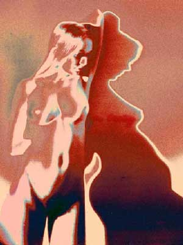

Dan McCormack
Shadow Series: Claire 1-18-03-9DD
 |
| (1 of 8) |
 |
| (1 of 8) |
Dan McCormack won a Bronze Medal in Art on the Internet 1999 (Tokyo) for his site titled "BODYSCAN." These works are taken from his new site "Pinhole to Digital," designed by his son, Orrin McCormack. Dan's works were made with a pinhole camera and colorized in Photoshop.
Dan has been a photographer of nudes and a digital artist for three-plus decades. He began working with an Apple IIe, and jokes that "I used a Timex for a portable computer. I think I even upgraded it to 16K!" In 1998 he began working with pinhole photography. He currently heads the Photography program at Marist College in Poughkeepsie, New York, teaching photography classes and an Introduction to Digital Media class.
Dan McCormack 's "Pinhole to Digital" website